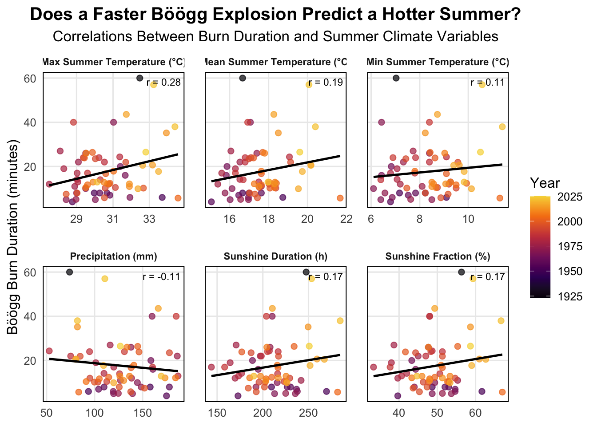
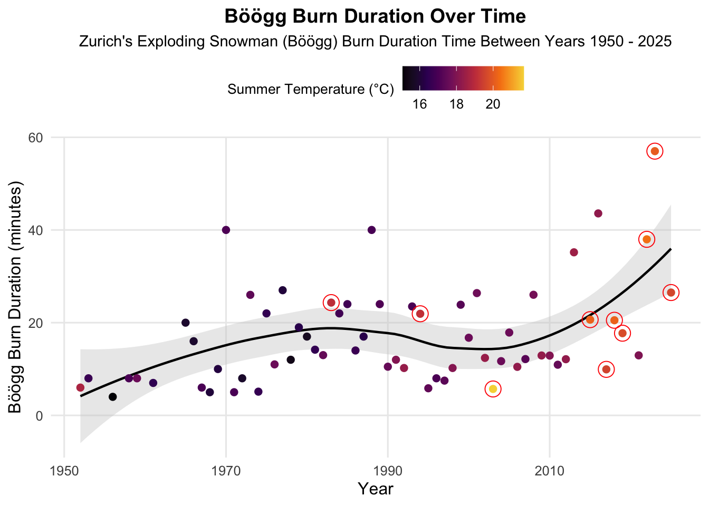

library(tidyverse)
library(tidytuesdayR)
library(here)
library(scales) # label aesthetics
library(Rmoji) # add emojis
# library(gghighlight) # highlight on graphs (did not end up using)Week 15 Tidy Tuesday
Introduction
Tidy Tuesday’s Homework
Tidy Tuesday is an international community of R enthusiasts that create visuals from the same dataset. The goal is to practice plotting and learn something new every week. It is amazing to see how many different ways you can visualize the same data.
Load Libraries
Read the Data
tuesdata5 <- tidytuesdayR::tt_load('2025-12-02')
sechselaeuten <- tuesdata5$sechselaeutenglimpse(sechselaeuten)Rows: 67
Columns: 9
$ year <dbl> 1923, 1952, 1953, 1956, 1958, 1959, 1961, 1965, 1966, 1967, 1…
$ duration <dbl> 60.00, 6.00, 8.00, 4.00, 8.00, 8.00, 7.00, 20.00, 16.00, 6.00…
$ tre200m0 <dbl> 16.67, 18.73, 16.67, 15.07, 17.00, 17.63, 16.47, 15.87, 15.83…
$ tre200mn <dbl> 7.03, 9.10, 7.17, 6.80, 8.23, 7.83, 7.53, 6.83, 6.43, 6.87, 6…
$ tre200mx <dbl> 32.47, 33.70, 29.97, 28.77, 30.67, 30.27, 30.83, 31.40, 31.67…
$ sre000m0 <dbl> 247.43, 269.70, 209.53, 172.83, 230.30, 226.67, 236.90, 188.6…
$ sremaxmv <dbl> 56.33, 61.67, 48.67, 39.67, 53.00, 52.00, 54.67, 43.33, 44.33…
$ rre150m0 <dbl> 73.97, 93.67, 157.90, 174.90, 177.87, 109.87, 104.20, 158.63,…
$ record <lgl> FALSE, FALSE, FALSE, FALSE, FALSE, FALSE, FALSE, FALSE, FALSE…This data shows the weather prediction of Zurich’s infamous exploding snowman (called the Böögg). At Zurich’s “Sechselaeuten” spring festival they blow up a cotton wool stuffed snowman with fireworks. “The saying goes that the quicker the Böögg’s head explodes, the finer the summer will be.”
Clean the Data
#### TIDY TUESDAY DATA CLEANING SUGGESTION
## burn duration ----
# https://github.com/philshem/Sechselaeuten-data
burn_duration <- readr::read_csv(
file = "https://raw.githubusercontent.com/philshem/Sechselaeuten-data/refs/heads/master/boeoegg_burn_duration.csv") |>
dplyr::mutate(duration = round(burn_duration_seconds / 60, digits = 2)) |>
dplyr::select(year, duration)
## variable selection ----
variable_selection <- c(
"tre200m0",
"tre200mn",
"tre200mx",
"sre000m0",
"sremaxmv",
"rre150m0"
)
## climate data ----
climate_data <- readr::read_delim(
file = "https://data.geo.admin.ch/ch.meteoschweiz.ogd-smn/sma/ogd-smn_sma_m.csv",
delim = ";"
) |>
dplyr::select(
date = reference_timestamp,
dplyr::any_of(variable_selection)
) |>
dplyr::mutate(
date = lubridate::dmy_hm(date),
year = lubridate::year(date),
month = lubridate::month(date)
) |>
dplyr::filter(month %in% 6:8) |>
dplyr::group_by(year) |>
dplyr::summarise(dplyr::across(.cols = -c(date, month), .fns = \(x) {
mean(x, na.rm = TRUE)
})) |>
dplyr::ungroup() |>
dplyr::mutate(sre000m0 = sre000m0 / 60) |>
dplyr::mutate(dplyr::across(.cols = -c(year), .fns = \(x) {
round(x, digits = 2)
})) |>
dplyr::mutate(dplyr::across(.cols = -c(year), .fns = \(x) {
ifelse(is.nan(x), NA, x)
}))
## combine datasets ----
sechselaeuten <- dplyr::left_join(
x = burn_duration,
y = climate_data,
by = dplyr::join_by(year)
) |>
dplyr::mutate(record = ifelse(tre200m0 >= 19, TRUE, FALSE))glimpse(sechselaeuten)Rows: 67
Columns: 9
$ year <dbl> 1923, 1952, 1953, 1956, 1958, 1959, 1961, 1965, 1966, 1967, 1…
$ duration <dbl> 60.00, 6.00, 8.00, 4.00, 8.00, 8.00, 7.00, 20.00, 16.00, 6.00…
$ tre200m0 <dbl> 16.67, 18.73, 16.67, 15.07, 17.00, 17.63, 16.47, 15.87, 15.83…
$ tre200mn <dbl> 7.03, 9.10, 7.17, 6.80, 8.23, 7.83, 7.53, 6.83, 6.43, 6.87, 6…
$ tre200mx <dbl> 32.47, 33.70, 29.97, 28.77, 30.67, 30.27, 30.83, 31.40, 31.67…
$ sre000m0 <dbl> 247.43, 269.70, 209.53, 172.83, 230.30, 226.67, 236.90, 188.6…
$ sremaxmv <dbl> 56.33, 61.67, 48.67, 39.67, 53.00, 52.00, 54.67, 43.33, 44.33…
$ rre150m0 <dbl> 73.97, 93.67, 157.90, 174.90, 177.87, 109.87, 104.20, 158.63,…
$ record <lgl> FALSE, FALSE, FALSE, FALSE, FALSE, FALSE, FALSE, FALSE, FALSE…### CLEAN THE DATA MORE
climate_long<-sechselaeuten %>%
select(year, duration,
temp_mean = tre200m0,
temp_min = tre200mn,
temp_max = tre200mx,
sun_hours = sre000m0,
sun_frac = sremaxmv,
precip_mm = rre150m0) %>%
pivot_longer(cols = -c(year, duration),
names_to = "variable",
values_to = "value") %>%
mutate(variable = recode(variable,
temp_mean = "Mean Summer Temperature (°C)",
temp_min = "Min Summer Temperature (°C)",
temp_max = "Max Summer Temperature (°C)",
sun_hours = "Sunshine Duration (h)",
sun_frac = "Sunshine Fraction (%)",
precip_mm = "Precipitation (mm)"))
# correlations for each facet
correlations <- climate_long %>%
group_by(variable) %>%
summarise(r = cor(duration, value, use = "complete.obs"))glimpse(climate_long)Rows: 402
Columns: 4
$ year <dbl> 1923, 1923, 1923, 1923, 1923, 1923, 1952, 1952, 1952, 1952, 1…
$ duration <dbl> 60, 60, 60, 60, 60, 60, 6, 6, 6, 6, 6, 6, 8, 8, 8, 8, 8, 8, 4…
$ variable <chr> "Mean Summer Temperature (°C)", "Min Summer Temperature (°C)"…
$ value <dbl> 16.67, 7.03, 32.47, 247.43, 56.33, 73.97, 18.73, 9.10, 33.70,…Tidy Tuesday Plot 1
# Scatter + regression lines faceted by climate variable
ggplot(climate_long,
aes(x = value, y = duration, color = year)) +
geom_point(alpha = 0.7, size = 2) + # scatter plot
geom_smooth(method = "lm", se = FALSE, color = "black", linewidth = 0.9) + # linear regression line
geom_text(data = correlations, # add in text on plot (correlation coefficient in each panel)
aes(x = Inf, y = Inf, # position of r value
label = paste0("r = ", round(r, 2))), # r value (correlation coefficient) on plot, 2 decimals
inherit.aes = FALSE, # do not use main plot aesthetics
hjust = 1.1, vjust = 1.9, size = 3) + # adjustments on r value placement
facet_wrap(~ variable, scales = "free_x") + # facet by temp, precip, sunshine variables
scale_colour_viridis_c(option = "B", end = 0.9) + # color scales
labs(title = "Does a Faster Böögg Explosion Predict a Hotter Summer?",
subtitle = "Correlations Between Burn Duration and Summer Climate Variables",
x = NULL,
y = "Böögg Burn Duration (minutes)",
color = "Year") +
theme_minimal(base_size = 12) +
theme(panel.grid.minor = element_blank(),
strip.text = element_text(face = "bold", size = 8.4), # labels smaller and bold
plot.title = element_text(face = "bold", hjust = 0.5, size = 15),
plot.subtitle = element_text(hjust = 0.5, size = 12.5),
panel.spacing = unit(1.2, "lines"), # increase space between facets
panel.border = element_rect(fill = NA, linewidth = 0.7)) # border around each plot

Figure 1 shows the correlations between the snowman’s burn duration and different variables like temperature, precipitation, and sunshine. Darker colors show previous years from 1925 and lighter colors show data from years up to 2025. Most weak positive correlations, except for precipitation, which shows a weak negative correlation. The data seems to show that slightly longer burn times are associated with slightly hotter summers, which contradicts the folk belief that faster explotions predict a warmer summer.
Tidy Tuesday Plot 2
# Filter out 1925 data which only has one year
sechselaeuten75<-sechselaeuten %>%
filter(year >= 1950)
# Time series of Böögg burn duration, colored by summer temp
ggplot(sechselaeuten75,
aes(x = year, y = duration)) +# line over time
geom_smooth(data = sechselaeuten75, fill = "grey80", method = "loess", # non-linear trends (loess)
color = "black", linewidth = 0.8) + # black line, grey fill
#geom_smooth(data = subset(sechselaeuten, record), fill = "#FFFFC5", color = NA) + # no line just the highlight ribbon of record high temps
geom_point(aes(color = tre200m0), size = 2) + # points colored by mean summer temp
geom_point(data = subset(sechselaeuten, record), shape = 21, size = 5, stroke = 0.5, color = "red") +
scale_colour_viridis_c(option = "B", end = 0.9) + # color scales
#coord_cartesian(ylim = c(0, 60)) + # zoom y-axis
#scale_x_continuous(breaks = c(1950, 1980, 2000, 2020)) + # fix x axis to show specific years
labs(title = "Böögg Burn Duration Over Time",
subtitle = "Zurich's Exploding Snowman (Böögg) Burn Duration Time Between Years 1950 - 2025",
#caption = "Points circled in orange are record high summer temperatures (average above 19°C)",
x = "Year",
y = "Böögg Burn Duration (minutes)",
color = "Summer Temperature (°C)") +
theme_minimal(base_size = 12) +
theme(panel.grid.minor = element_blank(),
plot.title = element_text(face = "bold", hjust = 0.5, size = 14),
plot.subtitle = element_text(hjust = 0.5, size = 11),
#plot.caption = element_text(hjust = 0.5, size = 10),
#panel.border = element_rect(fill = NA, linewidth = 0.7), # border
legend.title = element_text(size = 10),
legend.position = "top") # position it at the top

Figure 2 shows the non-parametric pattern of burn duration between the years 1950 - 2025 for a nice time-series visualization. Points with darker colors show colder temperatures and lighter colors show warmer temperatures. Points circled in red are record high summer temperatures (average above 19°C).
New Thing Learned
This Tidy Tuesday, I practiced with another faceted plot and used correlations to understand relationships better and be able to calculate it. I played around with color scales too that seem to be often used in publications. I used a loess for geom_smooth and practiced highlighting specific points that show background environmental type data. I made the second plot in case you didn’t like the first plot. Hopefully you are grading more on aesthetics and not on scientific coherence 😅 but I tried to do some cool things. I put the Summer Temperature legend up top because it fit better than on the side.
Extra
# ggsave(here("Tidy_Tuesday","Week15_tidytuesday", "Output", "Week15_tt_plot1.jpg"))
# insert_emoji("grinning_face_with_sweat")
# To do before running code:
# Empty your environment before you start working
# Restart R
# .rs.restartR()
# remove whole list in environment
# rm(list = ls())